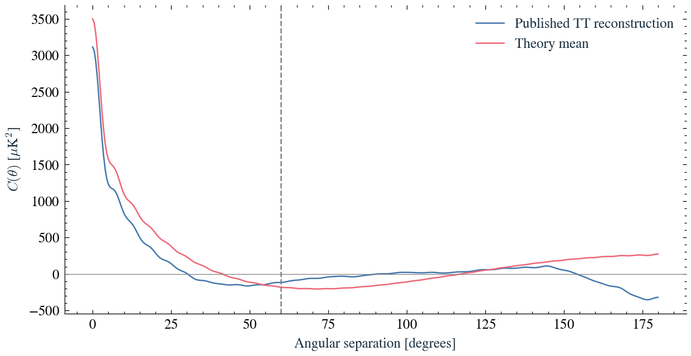

Notes for data
SHA-256, LF-normalised text
593d9b71d105d94c26f9c97e8b674e83fa1f79f22ff20f0fa921c30db84d9c6fBrowse 19 versioned evidence files. Table previews simply display stored rows. Consult the project report for the source, processing steps, and inference assumptions.

593d9b71d105d94c26f9c97e8b674e83fa1f79f22ff20f0fa921c30db84d9c6f6ae5ac6ec48d47013fa48f355281e5c0621fcba8723cbad28c249c4439dfaf3050022275b9b5bf25946cd4f3da25214bf5c232a37374f185e57711d284d2db07a1159ad2276afd53a1c157eb5b0f5b151cf39af5383d5feef6098e9ce1cfbcc6| ell | delta_S_half_uK4 |
|---|---|
| 2 | 30377.5654095 |
| 3 | 429.735100925 |
| 4 | -1467.44837353 |
| 5 | -162.747706191 |
3bdb6de9c8c30f703ca528817e532600d72bb0214dbc35e854ef92b1832da016086861c3a8decf9c1290e01205795bd626904c8c765d3b547b0125f93093ca3e| ell | observed_Cl_uK2 | theory_Cl_uK2 |
|---|---|---|
| 2 | 236.556690828 | 1064.71716623 |
| 3 | 490.570164834 | 504.606277211 |
| 4 | 217.472981534 | 286.704258841 |
| 5 | 314.516359724 | 183.150034596 |
1c4173d067778e69bbacad7ce0ce08677a475ca275a8519186f2758cab5bd108| ell | theory_Cl_uK2 | measured_fullsky_Cl_uK2 | beam_times_pixel_window |
|---|---|---|---|
| 0.000000000000000000e+00 | 0.000000000000000000e+00 | 0.000000000000000000e+00 | 1.000000000000031974e+00 |
| 1.000000000000000000e+00 | 0.000000000000000000e+00 | 0.000000000000000000e+00 | 9.985367446612013476e-01 |
| 2.000000000000000000e+00 | 1.064717166228116639e+03 | 2.104623373301517404e+02 | 9.956166500016903065e-01 |
| 3.000000000000000000e+00 | 5.046062772110217338e+02 | 4.820231056738789448e+02 | 9.912525012217373588e-01 |
1a8af77ff8b8c9baf764a1b34395470a11e9823a6dee06493f8703ba7208ec04| theta_deg | observed | reference_mean | simultaneous_low | simultaneous_high |
|---|---|---|---|---|
| 6.000000000000000000e+01 | -9.226338871239461525e+01 | -1.126396541797790434e+02 | -2.002568641962598122e+02 | -2.502244416329828880e+01 |
| 6.100000000000000000e+01 | -8.633095951330831497e+01 | -1.067198711724944360e+02 | -1.939913659079519448e+02 | -1.944837643703692720e+01 |
| 6.200000000000000000e+01 | -8.034188682137707360e+01 | -1.009316007214200823e+02 | -1.878861866114375800e+02 | -1.397701483140258460e+01 |
| 6.300000000000000000e+01 | -7.422609559364040877e+01 | -9.527965362569659646e+01 | -1.819722510091937124e+02 | -8.587056242199466283e+00 |
8ca86d3cf2851c7d0e18b17b56060fbce023727ee489558ee9557dc6067b6ab1| id | split_0reference_1calibration_2validation | cut_sky_s_half | masked_variance | pseudo_parity | hemisphere_max_contrast |
|---|---|---|---|---|---|
| 0.000000000000000000e+00 | 0.000000000000000000e+00 | 7.599934372319896283e+03 | 1.896415711569861969e+03 | 8.207901830152931621e-01 | 1.961558558755606974e-01 |
| 1.000000000000000000e+00 | 0.000000000000000000e+00 | 6.823458604446866957e+03 | 1.742120688882002923e+03 | 7.456719753721035016e-01 | 2.079718085805607186e-01 |
| 2.000000000000000000e+00 | 0.000000000000000000e+00 | 5.578679113526074616e+03 | 1.689410161592366876e+03 | 7.171523901143049828e-01 | 2.286143865183323798e-01 |
| 3.000000000000000000e+00 | 0.000000000000000000e+00 | 5.955298787639599141e+03 | 1.732373438253212043e+03 | 7.759005643312734124e-01 | 1.235258316065103168e-01 |
7c587a06914fed200a5a6444ed80876149672cd01a04c1a8a0923fae54e11c93| theta_deg | observed | reference_mean | simultaneous_low | simultaneous_high |
|---|---|---|---|---|
| 6.000000000000000000e+01 | -9.226338871239461525e+01 | -1.834930245563151914e+02 | -4.228515793564413343e+02 | 5.586553024381092314e+01 |
| 6.100000000000000000e+01 | -8.633095951330831497e+01 | -1.872903624046434743e+02 | -4.328095819593318083e+02 | 5.822885715004483131e+01 |
| 6.200000000000000000e+01 | -8.034188682137707360e+01 | -1.907857557973822509e+02 | -4.431463734195200459e+02 | 6.157486182475554415e+01 |
| 6.300000000000000000e+01 | -7.422609559364040877e+01 | -1.939489890985529428e+02 | -4.537028380629339495e+02 | 6.580485986582806390e+01 |
05eba87032eda8e507499fb8acb870ef7804b6c0813bf9ca8b9a01d1355ec69c| id | split_0reference_1calibration_2validation | cut_sky_s_half | masked_variance | pseudo_parity | hemisphere_max_contrast |
|---|---|---|---|---|---|
| 0.000000000000000000e+00 | 0.000000000000000000e+00 | 3.124606744380641030e+05 | 2.483495911434920345e+03 | 1.529869744302150281e+00 | 1.579337031919254009e-01 |
| 1.000000000000000000e+00 | 0.000000000000000000e+00 | 3.534401081060000433e+04 | 2.545812312487643339e+03 | 8.699992220755560224e-01 | 2.947219992238571673e-01 |
| 2.000000000000000000e+00 | 0.000000000000000000e+00 | 8.654543152220133925e+04 | 2.038351957023066916e+03 | 1.219697586163593916e+00 | 1.082472402380250109e-01 |
| 3.000000000000000000e+00 | 0.000000000000000000e+00 | 1.258824293790926458e+04 | 1.776640478711628248e+03 | 1.046299868217596796e+00 | 2.409973217784856792e-01 |
1ccf72db5eae5ff605c06ba6ad23340b54be9bac228ecf61f4a6c74a87ae2377| id | contrast_A0.0 | contrast_A0.05 | contrast_A0.1 | contrast_A0.2 | contrast_A0.3 | axis_error_deg_A0.0 |
|---|---|---|---|---|---|---|
| 0.000000000000000000e+00 | 2.446822389717489554e-01 | 2.660558504727538187e-01 | 2.906704159396096276e-01 | 3.387462587708423567e-01 | 3.846298257735434323e-01 | 7.188629277462854361e+01 |
| 1.000000000000000000e+00 | 3.505142636859564509e-01 | 3.384995635763522470e-01 | 3.263353282801916277e-01 | 3.109630103708191928e-01 | 3.262870629412377155e-01 | 8.129598047740373090e+01 |
| 2.000000000000000000e+00 | 1.676742412370082203e-01 | 1.930405669540955771e-01 | 2.180055073578906211e-01 | 2.664005131424580508e-01 | 3.122428488435214367e-01 | 5.616473823201094717e+01 |
| 3.000000000000000000e+00 | 1.885390922942604408e-01 | 1.523237848893336799e-01 | 1.663674430209053645e-01 | 2.470096535834652718e-01 | 3.244712928175443323e-01 | 3.944353569089876999e+01 |
6f24ab9fa699a0e98d8ec25f964e8dab10e796f144a09ab3fe449bbd58dfd636f3e9a9f426d0d20124d7fcc7544c8b9e10920cdbaa0322373fe8aa25bc69aa3eecc4b051634a58053b384cc273b74ecda76a8cdc5477147bf97326de6207b23990d721948c49f9c3070c2367021d8c971e56766a996509304443cb4874f45f73d9ccc7a049864b3170879f1828ef7d01614299d4624b5f795bf84470f38b464b1835e66a38687956811d9efb272d85f95569d9952a556ce89d0d9ba8af25a2b0a1359f5feac8beb08eb5fac4dc583fbd3178c9a99c3cc12cfe1532fe756069dfSHA-256 values verify the stored files. They do not independently validate the scientific analysis. Rebuild this page with python scripts/evidence_catalog.py followed by python scripts/render_evidence_page.py.